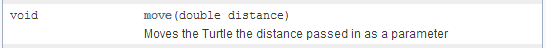
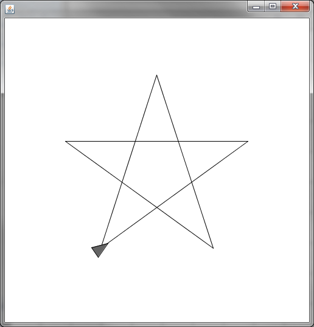

Turtle Graphics
Some of the first programmers programmed a small robot with a pen attached to it to draw designs. In sacco.jar there is an Object that helps you simulate it. It has methods to tell it to move, turn, and to put the pen up or down.
Open up the Turtle API and take a look at what methods you have available.
New Data Type!
Look at the parameter for the move method.

A double is like an int, but you can put decimal values into it. This means that you can move 255, or you can move 255.5209 if you would like.
Now create a program named Scribble and play with some of the methods to see how each of them works (except paintWindow). Don't forget that you must first construct a Turtle before you can start calling methods and that the penDown() method is necessary to actually start drawing.
Once you're done playing around with the methods, create a program named Star attempt to make the star pattern below (It doesn't matter where your Turtle finishes). While it doesn't have to be perfect, the cool people like Mr. Sacco will use Geometry to make sure that the star is perfectly centered around the screen.

Using a variable to make your life easier:
When completing the star, you probably have noticed a lot of repetition in your code. It repeats move, turn, move, turn, five times with the same values each time. Consider a situation where you want to change the size of the star because it's too big or too small. That's five different times that you have to edit your code to get a simple change. Let's modify it to use a variable:
Somewhere near the beginning of your program, declare an int and store the value of your side length into it.
int sideLength = 200;
Now you have your side length stored, go to each of your move commands and use the sideLength variable as the parameter
myTurtle.move(sideLength);
Run the program and see what size the star is, and then go back and change the sideLength variable to be 300 instead of 200. Run the program again and observe the results. By using a variable, we've saved ourselves time when it came to modifying it. Keep this in mind when programming. You always want to work smarter, not harder.